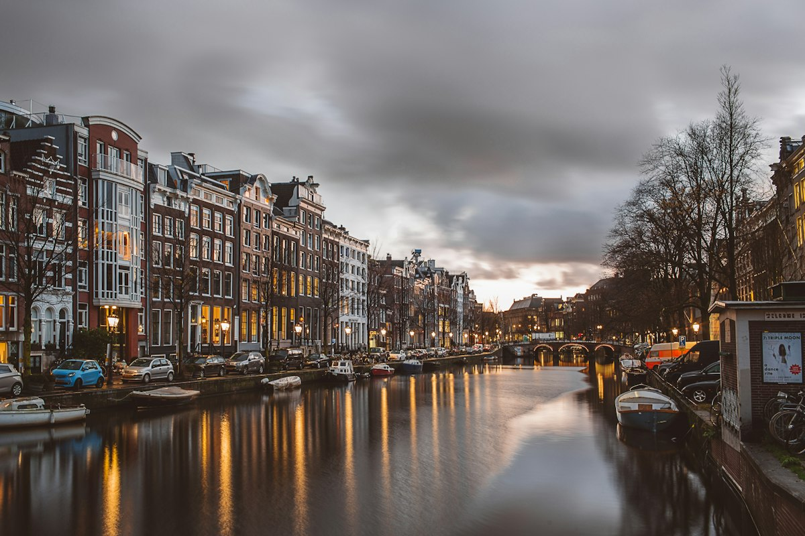

Брюссель

Коротка характеристика
Брюссель — столиця Бельгії, відома своїми історичними площами, культурними подіями, міжнародною атмосферою та архітектурою, що поєднує різні стилі.
Чому саме цей міський вибір
Мене приваблює Брюссель тим, що тут дуже чітко відчувається європейська культура: вулиці, кав'ярні, музеї та інтернаціональне середовище.
Цікаві факти
- Брюссель є офіційною столицею Європейського Союзу.
- У місті розташований знаменитий шоколадний музей.
- У Брюсселі є один із найкрасивіших ринків у Європі — Grand Place.
Визначні місця
- Гранд-Плас
- Атоміум
- Королівський палац
- Музей магнітних бомб
Особиста оцінка
Моя оцінка: 9/10. Брюссель здається містом, де гармонійно поєднуються історія, сучасність і стиль.
Додаткова інформація
Офіційний сайт Брюсселя
Повернутися на головну